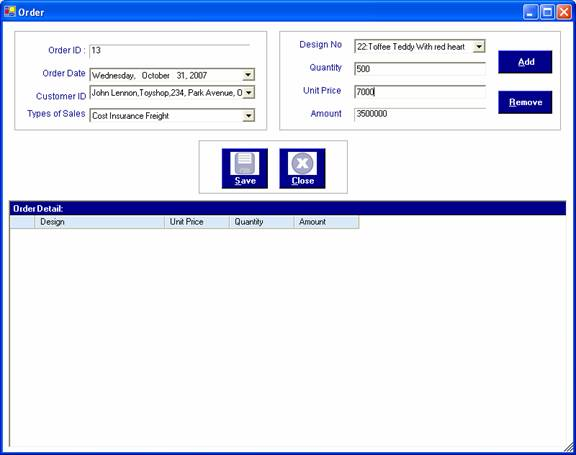
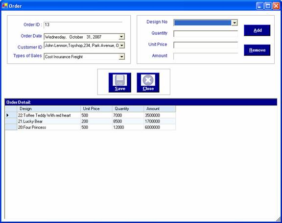
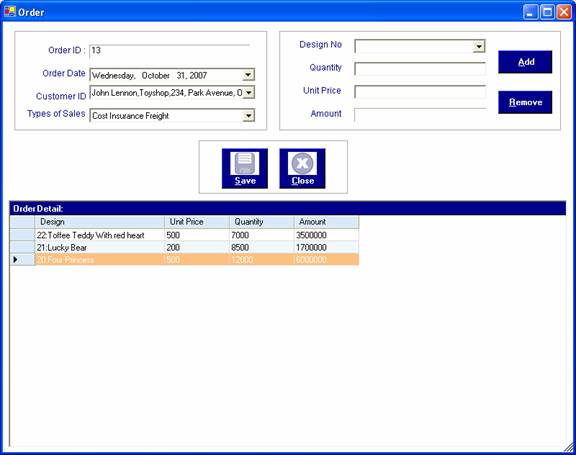
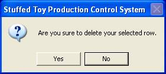
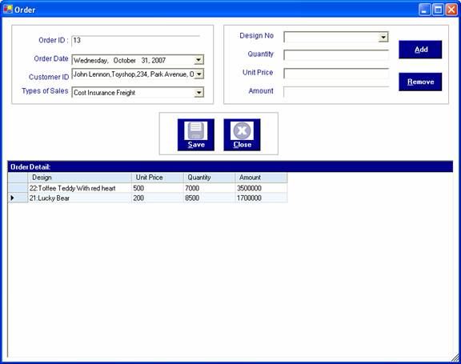
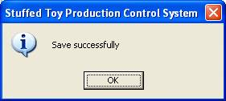

How to process making order
After you have successfully logged in to the system, you can enter the required data.
After you enter the necessary information of customers and designs, you can successfully make an order for your factory.
To make an order, open the "Order" form from the Process Menu Bar.When it is come out, the order ID is automatically filled and order date and customer information, design no, quantity and unit price need to be filled. When the quantity and unit price are filled, the total amount will be automatically calculated. It is possible to make many orders by adding the design no and quantities and prices by pressing "Add" button.

After the adding a design, the ordered design will be appeared in the grid. If more designs would like to be ordered, "Add" or "Alt +A" button can be pressed.

If customers change their mind to order the item, they can freely remove the design before the order information is saved. To remove the required line on the grid, double click on the line of grid that wants to be removed. When the line is become highlighted, click "Remove" or "Alt+R" to remove one line.

When the "Remove" button is clicked, the following message will be appeared to confirm your removing.

If "Yes" button is clicked, the highlighted line will be removed and if "No" button is clicked, there is no removing occurred. To remove the line, "Yes" button need to be clicked.

After making the orders, "Save" or "Alt+S" button need to clicked to save the data. When the "Save" button is pressed, the following message will be appeared.

When the saving process is complete, Press "Close" or "Alt+C" to close the order form.